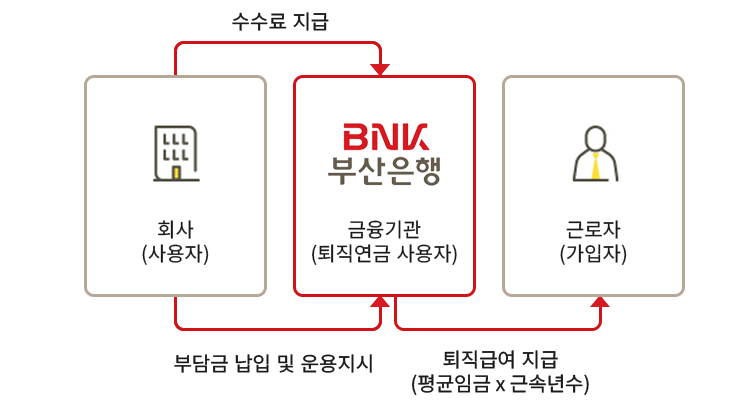
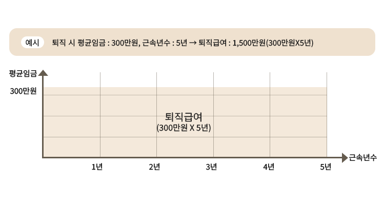

"부산은행 퇴직연금, 지금 바로 시작하세요."
퇴직연금 제도의 이해
확정급여형(DB)
확정급여형(DB : Defined Benefit)

제도 특징
- - 회사는 퇴직급여를 금융회사에 사외 적립하여 책임지고 직접 운용
- - 근로자가 퇴직할 때 수령할 퇴직급여가 정해진 방법으로 계산되어 사전에 확정됨
- - DB형 가입자는 추가납입, 중도인출 불가
퇴직급여 계산식
- 퇴직 시 평균임금* × 근속년수
- * 퇴직 시 평균임금 : 계속근로기간 1년에 대하여 30일분의 평균임금
퇴직급여 계산법
